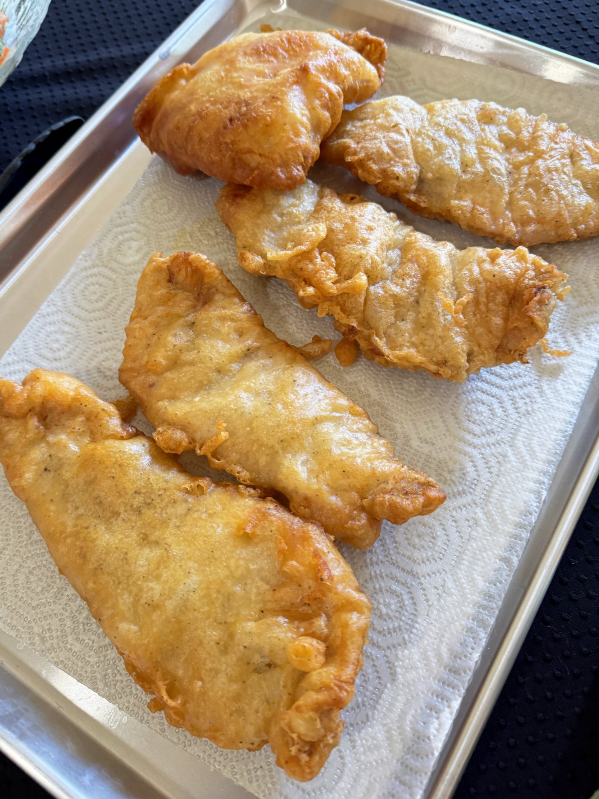

Inicio
Receta de Pescado Frito

Descripción
El pescado frito es un plato tradicional, sencillo y delicioso. Se caracteriza por su exterior dorado y crujiente, mientras que su interior permanece jugoso y lleno de sabor. Es ideal para acompañar con arroz, ensalada, papas fritas o rodajas de limón.
Ingredientes
- 1 pescado entero (merluza, reineta, tilapia o similar)
- 2 dientes de ajo machacados
- Jugo de limón
- Sal al gusto
- Pimienta al gusto
- 1 taza de harina de trigo
- Aceite vegetal (cantidad suficiente para freír)
Paso a paso
- Limpia el pescado, retirando las escamas y vísceras si es necesario. Enjuágalo y sécalo con papel absorbente.
- Haz dos o tres cortes diagonales en ambos lados del pescado para facilitar una cocción uniforme.
- Sazona el pescado con ajo machacado, jugo de limón, sal y pimienta, cubriendo tanto el interior como el exterior.
- Deja marinar durante 20 a 30 minutos para potenciar el sabor.
- Pasa el pescado por harina de trigo hasta cubrirlo completamente. Retira el exceso de harina.
- Calienta abundante aceite en una sartén a fuego medio-alto.
- Fríe el pescado durante 5 a 7 minutos por cada lado, o hasta que esté dorado y crujiente.
- Retira el pescado y colócalo sobre papel absorbente para eliminar el exceso de aceite.
- Sirve caliente acompañado de arroz, ensalada, papas fritas o rodajas de limón. ¡Disfruta!